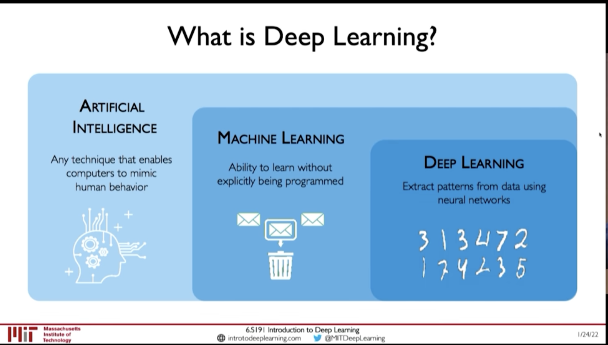
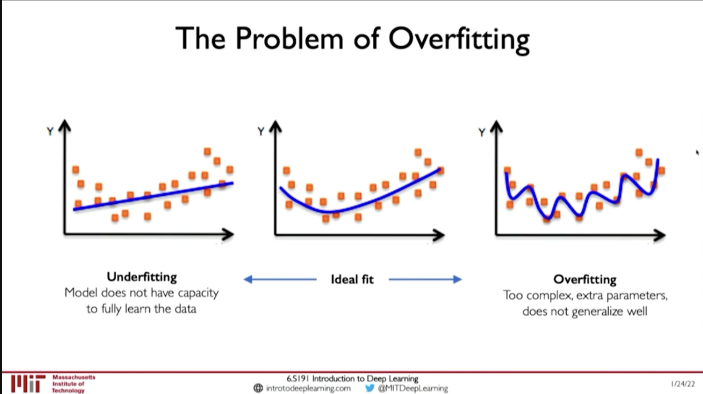
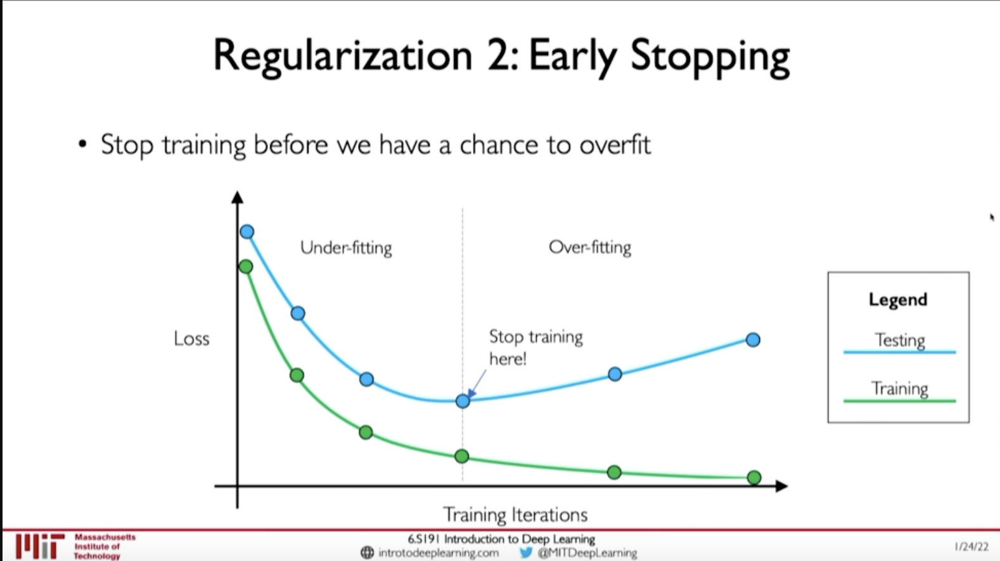

MIT 6.S191: Introduction to Deep Learning
Table of Contents
This is a series of Notes from MIT 6.S191 2022 lectures by:
- Alexander Amini
- Ava Soleimany
The list of lectures and their corresponing notes are:
- Lecture 1: Introduction to Deep Learning
- Lecture 2: RNN and Transformers
- Lecture 3: Convolutional Neural Networks
- Lecture 4: Deep Generative Modeling
- Lecture 5: Deep Reinforcement Learning
- Lecture 6: Deep Learning New Frontiers
Lecture 1: Introduction to Deep Learning: In which we explore what Deep Learning is, why it is popular. How are Deep NNs are trained, and some cautions on overfitting.
1. What is Deep Learning
@ 00:06:36

Figure 1: AI - ML - DL
- Artificial Intelligence: Any technique that enables computers to mimic human behaviour
- Machine Learning: Ability to learn without explicitly being programmed
- Deep Learning: Extract patters from data using neural networks
2. Why is it popular now?
@ 00:12:15
- Big Data
- Faster Hardware
- Software
- Improved techniques
- New Models
- Toolboxes (TensorFlow, PyTorch)
3. Training Deep Neural Networks
3.1. Optimization Algorithms:
- SGD
- Adam
- Adadelta
- Adagrad
- RMSProp
3.2. Learning Rate
@ 00:39:35
- Low learning rate: Slow convergence, and may get stuck at local minima
- Large learning rate: May diverge
How to find Learning Rate?
- Try different learning rates and check which works better
- Adaptive Learning Rate
3.3. Mini Batches
- Actual Loss is summation over all dataset. This is expensive to compute.
- And, Using only one example will be noisy
- So, compute loss from a subset of the dataset with say \(B\) samples. This is called mini-batching.
This allows:
- Smoother convergence
- Larger learning rate
- Parallization of computing gradient
3.4. Overfitting
@ 00:44:57 Overfitting results good performance in Training data but the model doesn't generalize well and performs poorly in test dataset. Or, when there is distributional shift in data.

Figure 2: Overfitting
3.4.1. Regularization
Regularization is a technique that constrains our optimization problem to discourage complex models. This improves generalization of model on unseen data
Techniques for Regulaization
- Dropout: randomly set neurons on hidden layers to 0
- Early Stopping: Stop training before we have a chance to overfit

Figure 3: Early Stopping (Regularization)